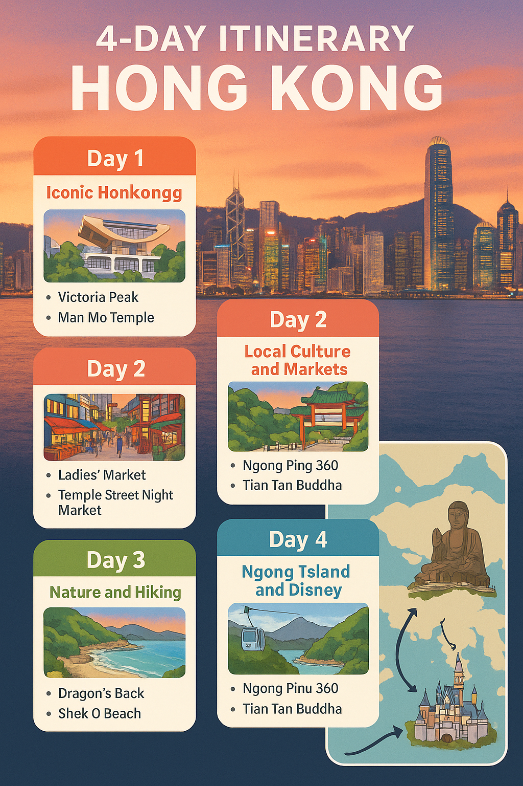
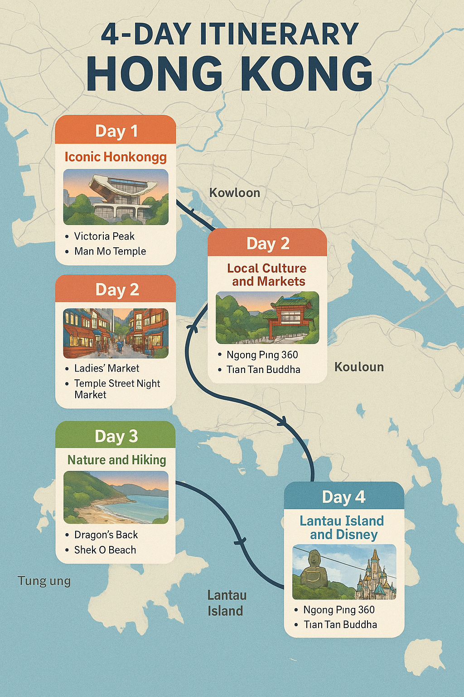

Original prompt:
My friends are visiting me in Hong Kong soon. They are staying for 4 days, and I am trying to show them around. What should our itinerary be?
First response:
That sounds like a fun trip! Here’s a suggested 4-day itinerary for showing your friends around Hong Kong:
Day 1: Iconic Hong Kong
Morning:
- Visit Victoria Peak: Take the Peak Tram for stunning views of the skyline.
- Explore Sky Terrace 428 for panoramic views of the harbor.
Lunch: Enjoy lunch at The Peak Lookout or Mak’s Noodle in Central.
Afternoon:
- Head down to Central and take a walk through Lan Kwai Fong for shopping and the vibrant nightlife scene.
- Visit Man Mo Temple in Sheung Wan for a dose of culture.
Evening:
- Go to Tsim Sha Tsui for the A Symphony of Lights show from the waterfront at Victoria Harbour.
Day 2: Local Culture and Markets
Morning:
- Start with a visit to the Hong Kong Museum of History in Tsim Sha Tsui for a deep dive into Hong Kong’s past.
Lunch: Try local dim sum at Tim Ho Wan or Maxim’s Palace.
Afternoon:
- Explore the bustling Mong Kok area: Visit the Ladies’ Market, Temple Street Night Market, and the Goldfish Market.
- Stop by Kowloon Walled City Park for a relaxing walk.
Evening:
- Have dinner at a local seafood restaurant in Sai Kung or Lei Yue Mun for fresh seafood.
Day 3: Nature and Hiking
Morning:
- Go on a hike up to Dragon’s Back for some incredible coastal views.
- Visit Shek O Beach for some relaxation after the hike.
Lunch: Grab lunch at a beachside café or head back to the city for a more diverse option.
Afternoon:
- Take the Star Ferry to Hong Kong Island and visit Hong Kong Park.
- Explore the Hong Kong Zoological and Botanical Gardens for a peaceful escape.
Evening:
- Have a relaxed dinner at Murray Lane or Café Gray Deluxe for views of the city’s skyline.
Day 4: Lantau Island and Disney
Morning:
- Take the MTR to Tung Chung, then head to Ngong Ping 360 for the cable car ride up to Tian Tan Buddha.
- Visit the Po Lin Monastery and take in the serenity of Lantau Island.
Lunch: Try vegetarian dishes at the Po Lin Monastery or grab a quick bite at a nearby café.
Afternoon:
- Spend the afternoon at Hong Kong Disneyland for a bit of fun and magic.
Evening:
- End the day with dinner at Citygate Outlets or a local restaurant nearby.
Feel free to adjust based on your friends’ interests!
Thoughts:
This was definitely more in depth than I thought GPT was going to be able to go. Specifically, it was able to highlight different modes of transportation like the Peak Tram, the MTR, and the Star Ferry, which are all things that are so Hong Kong and very much what tourists should experience. Further, I think this schedule has a great balance between nature with hiking and beaches, but also more fun things like Disneyland and Night markets.
Follow Up:
Can you give me links to buy tickets/book things?
Response:
Certainly! Here are the official links where you and your friends can purchase tickets for the top attractions in Hong Kong:
🏰 Hong Kong Disneyland
- Official Website: hongkongdisneyland.com
- Ticket Options: 1-Day Tickets, 2-Day Tickets, Park Hopper, and combo packages.
- Note: The park features the exclusive “World of Frozen” land, the first of its kind in any Disney park worldwide .([The Sun][1])
🚠 Ngong Ping 360 Cable Car
- Official Website: np360.com.hk
- Ticket Options: Standard Cabin, Crystal Cabin, and Crystal+ for one-way or round-trip rides.
- Tip: Purchasing tickets online in advance can help you skip the ticket line .([Ngong Ping 360][2], [Reddit][3])
🚋 Peak Tram & Sky Terrace 428
- Official Website: thepeak.com.hk
- Ticket Options: Peak Tram Ruby Special (with priority lane access), Sky Terrace 428 tickets, and combo packages.
- Morning Special Combo Ticket: Offers a 25% discount for visits before 10:30 AM .
⛴️ Star Ferry
- Official Website: starferry.com.hk
- Ticket Options: Regular single fares and 4-Day Tourist Tickets for unlimited rides on Central–Tsim Sha Tsui and Wan Chai–Tsim Sha Tsui routes.
- Note: Tickets can be purchased at the ferry piers.
🏛️ Hong Kong Museum of History
- Official Website: hk.history.museum
- Admission: Free for the permanent exhibition “The Hong Kong Story”.
- Special Exhibitions: May have separate admission fees.([Hong Kong Museum of History][4], [Hong Kong Cheapo][5])
🌿 Hong Kong Zoological and Botanical Gardens
- Official Website: hkzbg.gov.hk
- Admission: Free.
- Highlights: Home to a variety of plants, birds, and mammals, offering a peaceful retreat in the city.([hkzbg.gov.hk][6], [Holidify][7], [Visit Our China][8])
If you need assistance with transportation options, restaurant recommendations, or any other details to enhance your itinerary, feel free to ask!
Thoughts:
This might be the most useful part of the LLM - being able to parse out this information about the ticket options and admission fees is something I wish I could be done for me in the matter of seconds, especially because nowadays a lot of websites can be really difficult to look through and find the information you’re looking for. Here, the LLM acts like a one stop shop which is really great.
Visual graphic:

This was honestly a great graphic, apart from some spelling errors, as I really appreciate the vivid colors. Also, why are there 2 Day 2s?
Getting a graphic with a map:

Reflection:
These suggestions were quite basic, but honestly great to be all together. I’ll keep these in mind as my friends Mariana and Eva come visit Hong Kong next week! I in fact have taken some of these ideas and texted to them, since after living in HK for over 10 years I’ve kind of forgotten the more touristy things that are good to do.
One issue is the spelling of words in these graphics, since they mix up Hong Kong into Honkongg, as well as Kowloon into Kouloun, and Tung Chung to Tung ung. This is consistently an issue with image generation from LLMs, and I’d be really interested to learn more about the reason why they fail to process information well in this use case of creating images, but do fine otherwise when generating text responses.
This post was also inspired by Sose and her London itinerary.